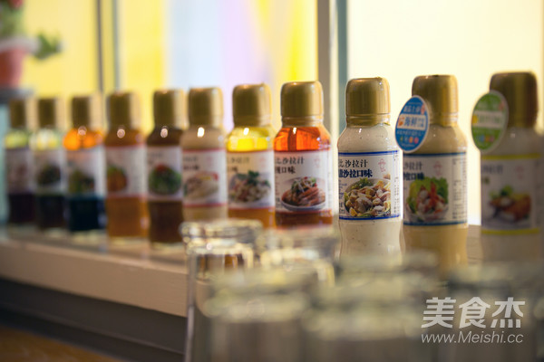
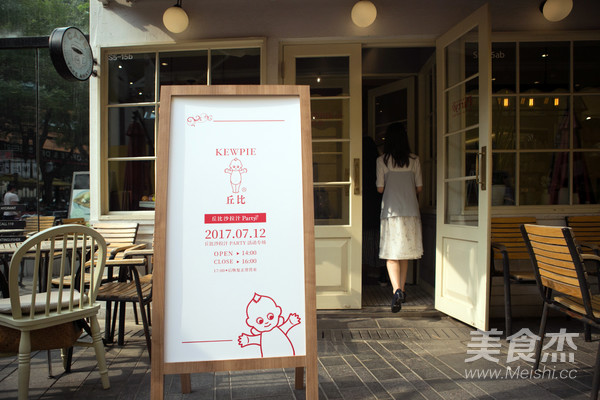
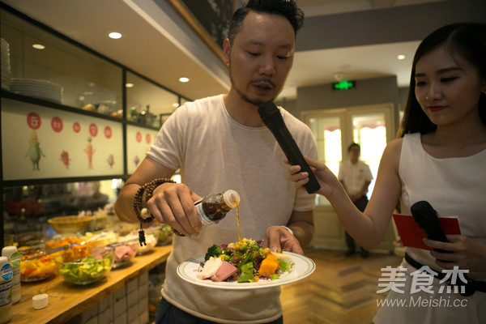
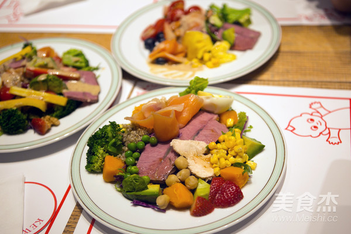

讨论区 > 中华美食 > 为什么网红们都爱吃丘比沙拉汁
美食小编
+ 关注发私信
发帖 337
关注 121
粉丝 1028841
注册 2011-09-01 09:52
又到了要露肉的季节，很多注意身材的美眉开始戒肉减油，多吃蔬菜和水果，开启清淡饮食模式。但是…蔬菜水果不好吃怎么办？这时候丘比老司机就要来指导大家了！让没有味道的蔬菜水果变美味可口的重点就是，你需要拥有一瓶丘比沙拉汁！（不，是很多瓶丘比沙拉汁！）
丘比沙拉汁是什么？回答：蘸拌煎炒样样行的调味料！可能有些人还不熟悉丘比沙拉汁，那些走在健康与美容前沿的网红们已经对它爱不释手。 7月12日，阳光午后，众多网红相约丘比沙拉汁PARTY。这次活地点是为期一天限定的丘比沙拉吧，从店内装潢到餐桌小物都是清新可爱的丘比style。下午茶时间，网红们品尝着红茶甜品，听老师讲解有关健康与美容的知识，然后各自介绍自己平时的保养秘诀。数百名网友通过直播向老师提问，各种即兴回答让全场笑声不断。在大家的发言中都提到了多吃蔬菜水果以保证每日营养的摄入，至于用味道平庸的蔬菜水果能制作出怎样的健康美味佳肴，老师向大家介绍了“能量沙拉”。能量沙拉是指一份沙拉里必须具备蔬菜，水果，蛋白质三类以上食材，既能满足人体所需的能量，又不摄入过多热量，在日本，“能量沙拉”已经逐渐成为餐桌上的主食。这次丘比沙拉汁PARTY为参加者准备了蔬菜，水果，蛋白质，干果等多种食材，再配上丘比沙拉汁，让大家DIY属于自己的能量沙拉。网红们各自按照喜欢的口味制作出了色香味俱全的丘比能量沙拉，满足之余还不忘晒出照片与粉丝们分享。
平日里工作繁忙的白领们经常是外卖、零食过一天，既没有营养还容易长胖，长期下去身体会出现各种问题。今后不妨试试能量沙拉DIY+丘比沙拉汁，省时省事又美味健康。丘比沙拉汁除了有大家熟悉的焙煎芝麻口味、大拌菜口味、凯撒沙拉口味，今年6月又推出了丘比沙拉汁海鲜沙拉口味和丘比沙拉汁清柠口味两种新品。现在一共11种口味，每天都可以品尝不一样的新鲜。
 这个夏天，让丘比沙拉汁来帮您实现餐桌上的美味吧！